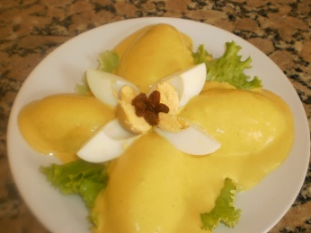

El Blog de Andrea
Frase del día
La temperatura en los próximos días
Receta de la semana
Frase del día
Por muy larga que sea la tormenta, el sol siempre vuelve a brillar entre las nubes.
La temperatura en los próximos días
- Hoy: mín.15 - máx.23
- Mañana: mín.18 - máx.27
- Pasado mañana: mín.20 - máx:27

Receta de la semana: Papa a la huancaina
Ingredientes para 4 porciones:
- Medio kilogramo de papas sancochadas
- Un paquete de galletas de agua o 2 panes
- Medio tarro de leche evaporada
- Un ají amarillo grande
- Dos cebollas pequeñas
- 250 gramos de queso fresco
- Aceite vegetal
- Sal a gusto
Ingredientes para la decoración:
- Dos huevos sancochados
- Hojas de lechuga
- 4 aceitunas grandes
Preparación
- Las papas que están previamente sancochadas, las pelamos y las partimos por la mitad, ya que sobre ellas verteremos la deliciosa crema a la huancaína, así que una vez listas las colocamos en los platos a servir, no olvidar que cada plato deberá tener como base una o dos lechugas que también le da una excelente presentación.
- En una sartén aparte, colocamos el aceite para que empiece a calentar y en la tabla de picar, partimos el ají amarillo en dos, para sacarle todas las pepitas dentro, que a veces le dan un sabor extra picante a la salsa, yo las prefiero sacar, que es lo recomendable pero si lo desean más picante pueden dejar algunas, picamos en cubitos el ajo y la cebolla, y todos estos ingredientes van directo a la sartén en donde nos espera el aceite ya caliente.
- Luego de sacar los ingredientes de la sartén, esperar que se enfríen y colocarlos todos juntos en la licuadora, junto con la leche, el queso y no olvidar de las galletas o panes. Empezar a licuar todo de a pocos y luego cuando terminemos, separarlo en un recipiente o sino directamente vaciar la crema sobre la papa sancochada previamente partida en dos.
- Ya para culminar con la decoración, colocamos los huevos sancochados previamente partidos por la mitad, las aceitunas, también cortadas por la mitad, sin pepa y los cortes de pimentón de tal manera que se vea muy atractiva a los ojos, ya que como le dije en las anteriores recetas, todo entra por los ojos.
Comentarios
@sergiomolina
Increíble contenido!
@jazminrovetta
Gran frase para comenzar la semana
@marinacorso
Bueníma receta para compartir en familia!
Volver arriba